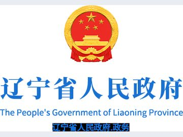
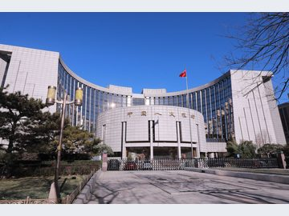

01
财政金融促内需“组合拳”政策效能加速释放
我国财政金融协同促内需一揽子政策实施以来，财政资金牵引金融资源发挥乘数效应，着力激发民间投资，促进居民消费，政策效能加速释放。

我国财政金融协同促内需一揽子政策实施以来，财政资金牵引金融资源发挥乘数效应，着力激发民间投资，促进居民消费，政策效能加速释放。
中国人民银行党委书记、行长潘功胜主持召开党委会议，传达学习习近平总书记在党的二十届五中全会上的重要讲话和全会精神，研究部署贯彻落实举措。

据金融监管总局消息，10月30日，金融监管总局召开党委（扩大）会议，传达学习党的二十届五中全会精神，结合金融监管工作实际，研究部署贯彻落实措施。
新华财经北京10月30日电（记者陆宇航）在30日的建设银行 2026年第三季度业绩说明会上，建设银行 副行长纪志宏在回答新华财经记者提问时表示，前三季度…
10月30日，招商银行（600036.SH）披露2026年三季报。财报显示，该行前三季度实现营业收入2648.52亿元，同比增长5.34%；
10月30日，中国邮政储蓄银行股份有限公司（下称“邮储银行”，股票代码：601658.SH，1658.HK）公布了2026年第三季度报告。
展厅外，光储充一体化设施、车网协同（V2G）充电桩依次排开，华晨宝马厂房顶上铺满光伏板。车间里机器轰鸣依旧，只是“喂”给它们的电有了变化。

“我们不需要类似孵化器的服务，就想直接告诉各位老师我们企业的技术‘冻结’在哪儿，将来要做的产品是什么方向。
新华网沈阳10月29日电（记者杨金志、李宇佳）10月28日出版的《经济参考报》发表题为《在垂直领域，见“隐形冠军”——来自辽宁鞍山的县域经济样本观察》的重点…

每个工作日开展隔夜逆回购操作招标，操作利率为1.25%。7天期逆回购操作主要在税期、月末等时点开展。

债券在股市依然偏弱的情况下出现利率的反弹主要是因为债券对利多反映是非常充分的。本质上，当一类资产走向极端的时候，估值的作用就会显得更为明显。